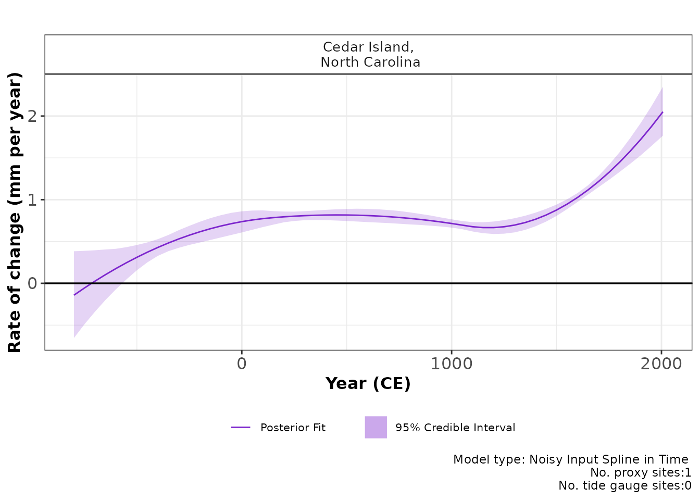

reslr: quick start guide
Maeve Upton, Andrew Parnell and Niamh Cahill
2024-02-14
Source:vignettes/quick_start.Rmd
quick_start.RmdStep 1: install reslr
Use:
# Not on CRAN yet
#install.packages("reslr")
#devtools::install_github("maeveupton/reslr")
install_github("maeveupton/reslr")then,
Note: The JAGS software is a requirement for this instruction sheet and refer back to main vignettes for more information.
Step 2: load in the data into reslr
There is a large example dataset included in the reslr
package called NAACproxydata. In this example, we
demonstrate how to include proxy record data which is stored in a csv
file. This csv file of data can be found in the package and the
readr function reads the csv file:
path_to_data <- system.file("extdata", "one_data_site_ex.csv", package = "reslr")
example_one_datasite <- read.csv(path_to_data)Using the reslr_load function to read in the data into
the reslr package:
example_one_site_input <- reslr_load(
data = example_one_datasite)Step 3: plot the data
plot(
x = example_one_site_input,
title = "Plot of the raw data",
xlab = "Year (CE)",
ylab = "Relative Sea Level (m)",
plot_tide_gauges = FALSE,
plot_caption = TRUE
)
Step 4: Run your statistical model and check convergence
Select your modelling technique from the modelling options available:
| Statistical Model | Model Information |
model_type code |
|---|---|---|
| Errors in variables simple linear regression | A straight line of best fit taking account of any age and measurement errors in the RSL values using the method of Cahill et al (2015). Use for single proxy site. | “eiv_slr_t” |
| Errors in variables change point model | An extension of the linear regression modelling process. It uses piece-wise linear sections and estimates where/when trend changes occur in the data (Cahill et al. 2015). | “eiv_cp_t” |
| Errors in variables integrated Gaussian Process | A non linear fit that utilities a Gaussian process prior on the rate of sea-level change that is then integrated (Cahill et al. 2015). | “eiv_igp_t” |
| Noisy Input spline in time | A non-linear fit using regression splines using the method of Upton et al (2023). | “ni_spline_t” |
| Noisy Input spline in space and time | A non-linear fit for a set of sites across a region using the method of Upton et al (2023). | “ni_spline_st” |
| Noisy Input Generalised Additive model for the decomposition of the RSL signal | A non-linear fit for a set of sites across a region and provides a decomposition of the signal into regional, local-linear (commonly GIA) and local non-linear components. Again this full model is as described in Upton et al (2023). | “ni_gam_decomp” |
For this example, it is a single site and we are interested in how it varies over time select the Noisy Input spline in time. If it was multiple sites, we recommend using a spatial temporal model, i.e. Noisy Input spline in space and time, or for decomposing the signal, i.e. Noisy Input Generalised Additive model.
Once the model is chosen use the reslr_mcmc function to
run it:
res_one_site_example <- reslr_mcmc(
input_data = example_one_site_input,
model_type = "ni_spline_t",
CI = 0.95
)The convergence of the algorithm is examined and he parameter estimates from the model can be investigated using the following:
summary(res_one_site_example)
#> No convergence issues detected.
#> # A tibble: 2 × 7
#> variable mean sd mad q5 q95 rhat
#> <chr> <dbl> <dbl> <dbl> <dbl> <dbl> <dbl>
#> 1 sigma_beta 2.08 0.673 0.550 1.28 3.36 1.00
#> 2 sigma_y 0.00633 0.00485 0.00451 0.000462 0.0159 1.00Step 5: Plot the results
The model fit results can be visualised using the following function:
plot(res_one_site_example,
xlab = "Year (CE)",
ylab = "Relative Sea Level (m)",
plot_type = "model_fit_plot"
)For the rate of change plot use:
plot(res_one_site_example,
plot_type = "rate_plot"
)
To examine the data creating these plots the user types the following:
output_dataframes <- res_one_site_example$output_dataframes
head(output_dataframes)
#> Longitude Latitude SiteName data_type_id Age pred
#> 1 -76.38 34.971 Cedar Island,\n North Carolina ProxyRecord -800 -2.312244
#> 2 -76.38 34.971 Cedar Island,\n North Carolina ProxyRecord -750 -2.317169
#> 3 -76.38 34.971 Cedar Island,\n North Carolina ProxyRecord -700 -2.317896
#> 4 -76.38 34.971 Cedar Island,\n North Carolina ProxyRecord -650 -2.314632
#> 5 -76.38 34.971 Cedar Island,\n North Carolina ProxyRecord -600 -2.307583
#> 6 -76.38 34.971 Cedar Island,\n North Carolina ProxyRecord -550 -2.296957
#> upr lwr rate_pred rate_upr rate_lwr CI
#> 1 -2.397463 -2.225263 -0.14186601 -0.66779231 0.3804741 95%
#> 2 -2.385684 -2.248082 -0.05583223 -0.49462281 0.3840957 95%
#> 3 -2.376230 -2.261086 0.02606197 -0.34101133 0.3913532 95%
#> 4 -2.365360 -2.263597 0.10381640 -0.19608109 0.3998516 95%
#> 5 -2.356589 -2.258776 0.17743104 -0.06808995 0.4181455 95%
#> 6 -2.345079 -2.247388 0.24690589 0.05363508 0.4378491 95%To examine the additional options in the reslr package,
see the main vignette.